1088D24 rigid pipe for coolant inlet to water pump - r + r
- Path
- Procedures > 10 ENGINE > 1088 ENGINE COOLING > 1088D COOLANT PIPES AND HOSES > 1088D24 rigid pipe for coolant inlet to water pump - r + r
- Kind
- repair procedure (removal / refitting; the operation number is the code)
- Applies to
- engines: 1.2 8v, 1.4 8v, 1.6 16v, 1.9 JTD 8V, 1.9 DIESEL; all production periods
- Interactive page
- https://sloeber94.github.io/elrnDB-fDbl/en/#/2584312
Applies to: engines: 1.2 8v; all production periods
 Removing
Removing
 Refitting
RefittingPosition the vehicle on a lift.
Op. 7055B54 PROTECTION/GUARD UNDER ENGINE - R.R.
Op. 1072C44 EXHAUST MANIFOLD HEAT SHIELD R+R
Position a suitable container for collecting the coolant.
Disconnect the lower coolant outlet hose from the radiator and drain the coolant into a container.
Reconnect the lower coolant outlet hose.
Raise the lift.
1. Remove collar (1a) and disconnect the lower radiator sleeve (1b) from the rigid pipe.
2. Undo the bolt securing the rigid pipe bracket to the engine.
3. Remove the coolant pump pipe.
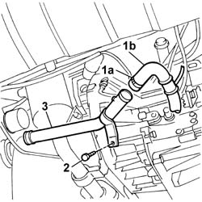
Applies to: engines: 1.2 8v; all production periods
Refitting
RemovingFit the pipe and connect to the coolant pump.
Tighten the fixing bolt to the crankcase torque.
Fastening | Component | dia | Value (daNm) | |
|---|---|---|---|---|
- | Bolt | COOLANT PUMP RIGID INLET PIPE | M6 | 1 |
Connect the coolant outlet sleeve from the radiator to the rigid pipe and secure with the retaining collar.
Lower the lift.
Op. 1072C44 EXHAUST MANIFOLD HEAT SHIELD R+R
Applies to: engines: 1.6 16v; all production periods
Removing
RefittingPosition the vehicle on a lift.
Disconnect the negative battery terminal.
Description | Connector | |
|---|---|---|
- | Battery |
Op. 5530B52 BATTERY SUPPORT/DRIP TRAY - R.R.
Op. 7055B54 PROTECTION/GUARD UNDER ENGINE - R.R.
Op. 1072C44 EXHAUST MANIFOLD HEAT SHIELD R+R
Op. 1088D23 HOSE FROM THERMOSTAT TO RIGID PUMP COOLANT INLET PIPE - R.R.
1. Disconnect the climate control system heater coolant return pipe from the rigid coolant intake pipe to the water pump.
2. Disconnect the electrical connections from the alternator.
Description | Connector | |
|---|---|---|
2 | Alternator |
3. Undo the bolts (3a) and remove the water pump rigid inlet pipe (3b).
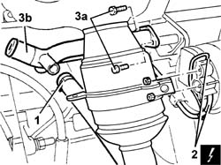
Applies to: engines: 1.6 16v; all production periods
Raise the lift.
1. Open the cover (1a) and disconnect the electrical connection (1b) from the starter motor.
Description | Connector | |
|---|---|---|
1b | Starter motor |
2. Disconnect the electrical connection from the alternator.
Description | Connector | |
|---|---|---|
2 | Alternator |
Lower the vehicle, release the wiring collars from the gearbox bell housing and remove the rigid pipe from the vehicle with the electrical wiring.
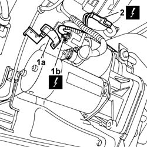
Applies to: engines: 1.6 16v; all production periods
Refitting
RemovingPosition the rigid pipe with electrical wiring in its original position.
Reclose the wiring collars on the gearbox bell housing.
Connect the electrical connection to the alternator.
Description | Connector | |
|---|---|---|
- | Alternator |
Connect the electrical connections for the starter motor and close the protective cover.
Description | Connector | |
|---|---|---|
- | Starter motor |
Tighten the bolts securing the rigid inlet pipe to the water pump to the recommended torque.
Fastening | Component | dia | Value (daNm) | |
|---|---|---|---|---|
- | Bolt | COOLANT PUMP RIGID INLET PIPE | M8 | 2.5 |
Connect the electrical connections to the alternator.
Description | Connector | |
|---|---|---|
2 | Alternator |
Connect the climate control system heater coolant return pipe to the rigid coolant intake pipe to the water pump.
Op. 1088D23 HOSE FROM THERMOSTAT TO RIGID PUMP COOLANT INLET PIPE - R.R.
Op. 1072C44 EXHAUST MANIFOLD HEAT SHIELD R+R
Op. 7055B54 PROTECTION/GUARD UNDER ENGINE - R.R.
Op. 5530B52 BATTERY SUPPORT/DRIP TRAY - R.R.
Op. 0010T20 ENGINE COOLANT - CHANGE
Connect the negative battery terminal.
Description | Connector | |
|---|---|---|
- | Battery |
Remove the vehicle from the lift.
Applies to: engines: 1.9 DIESEL; all production periods
Removing
RefittingOp. 5530B52 BATTERY SUPPORT/DRIP TRAY - R.R.
Op. 1048A10 AIR FILTER ASSEMBLY - R.R.
Op. 1080C10 E.G.R. VALVE - R + R
Op. 1016A22 CAM COVER WITH FUEL DUCT - R + R AND REPLACE GASKET
Op. 1072C44 EXHAUST MANIFOLD HEAT SHIELD R+R
Op. 7055B54 PROTECTION/GUARD UNDER ENGINE - R.R.
Position a suitable container for collecting the engine coolant.
Disconnect the lower pipe from the radiator and drain the engine cooling system.
Remove the container from beneath the vehicle.
1. Loosen the retaining collar (1a) and disconnect the expansion tank pipe (1b) from the rigid pipe.
2. Unscrew connection (2a) and disconnect the water return pipe (2b) to the exchanger from the pipe.
3. Undo the bolts fixing the rigid pipe to the cylinder head.
4. Unscrew bolts (4a) securing the pipe to the rigid pipe reinforcement bracket (4b) - thermostat.
5. Remove the rigid water intake pipe to the pump.
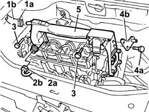
Applies to: engines: 1.9 DIESEL; all production periods
Refitting
RemovingFit the rigid inlet water pipe on the pump.
Tighten the bolts fixing the rigid pipe to the cylinder head to torque.
Fastening | Component | dia | Value (daNm) | |
|---|---|---|---|---|
- | Bolt | COOLANT PUMP RIGID INLET PIPE | M6 | 0.9 |
Tighten the bolts securing the rigid pipe to the thermostat union bracket.
Connect the water return pipe to the heat exchanger to the rigid pipe and tighten the connector.
Connect the expansion tank pipe to the rigid pipe.
Raise the axle and connect the lower coolant pipe.
Op. 7055B54 PROTECTION/GUARD UNDER ENGINE - R.R.
Op. 1072C44 EXHAUST MANIFOLD HEAT SHIELD R+R
Op. 1016A22 CAM COVER WITH FUEL DUCT - R + R AND REPLACE GASKET
Op. 1080C10 E.G.R. VALVE - R + R
Op. 1048A10 AIR FILTER ASSEMBLY - R.R.
Applies to: engines: 1.9 JTD 8V; all production periods
Removing
RefittingPosition the vehicle on a lift.
Proceed with the removal
Proceed with the removal
Op. 5530B52 BATTERY SUPPORT/DRIP TRAY - R.R..
Proceed with the removal
Op. 1048A40 HOSE FROM AIR FILTER TO FLOW METER - R.R..
Proceed with the removal
Op. 7055B54 PROTECTION/GUARD UNDER ENGINE - R.R..
1. Loosen the band and disconnect the upper coolant inlet hose to the radiator, thermostat side.
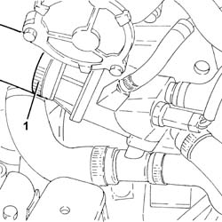
Applies to: engines: 1.9 JTD 8V; all production periods
1. Loosen the collar and disconnect the pipe from the T-connector of the thermostat to the rigid coolant intake pipe to the coolant pump, rigid pipe side.
2. Loosen the band and disconnect the lower coolant inlet hose from the radiator, water pump rigid coolant inlet pipe side.
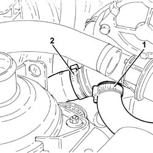
Applies to: engines: 1.9 JTD 8V; all production periods
1. Unscrew bolts (1a) and move aside the rigid pipe for coolant between the engine oil heat exchanger and water/exhaust gas heat exchanger for the EGR system (1b) without disconnecting the hoses.
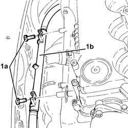
Applies to: engines: 1.9 JTD 8V; all production periods
1. Loosen the band and disconnect the system supply pipe from the rigid coolant intake pipe to the water pump.
2. Loosen the collar and disconnect the pipe from the engine oil heat exchanger to the rigid coolant intake pipe to the water pump, rigid pipe side.
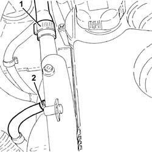
Applies to: engines: 1.9 JTD 8V; all production periods
1. Undo the bolts (1a) and remove the rigid coolant inlet pipe to the water pump (1b).
2. Remove the gasket.
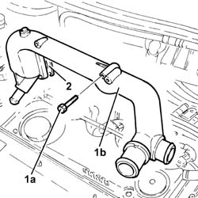
Applies to: engines: 1.9 JTD 8V; all production periods
Refitting
Removing1. Place the water pump rigid inlet pipe (1a) in position and secure it tightening the bolts (1b) to the recommended torque.
Fastening | Component | dia | Value (daNm) | |
|---|---|---|---|---|
1b | Bolt | COOLANT PUMP RIGID INLET PIPE | M6 | (Cylinder head side) 0.8 - 1.1 |
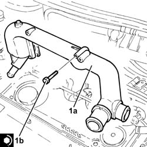
Applies to: engines: 1.9 JTD 8V; all production periods
Connect the pipe from the engine oil heat exchanger to the rigid coolant intake pipe to the water pump, rigid pipe side and tighten the collar.
Connect the system supply pipe to the rigid fluid intake pipe to the water pump and tighten the band.
Refit the rigid pipe for coolant between the engine oil heat exchanger and the water/exhaust gas heat exchanger for the EGR system and secure with bolts.
Connect the lower coolant inlet hose from the radiator, water pump rigid coolant inlet pipe side and tighten the band.
Connect the pipe from the T-connector of the thermostat to the rigid coolant intake pipe to the coolant pump, rigid pipe side and tighten the collar.
Connect the upper coolant input sleeve to the radiator, thermostat side, and tighten the band.
Proceed with the refitting
Op. 7055B54 PROTECTION/GUARD UNDER ENGINE - R.R..
Proceed with the refitting
Op. 1048A40 HOSE FROM AIR FILTER TO FLOW METER - R.R..
Proceed with the refitting
Op. 5530B52 BATTERY SUPPORT/DRIP TRAY - R.R..
Proceed with the refitting
Refill the engine cooling system
Op. 0010T20 ENGINE COOLANT - CHANGE.
Remove the vehicle from the lift.
Applies to: engines: 1.4 8v; all production periods
Removing
RefittingOp. 0010T20 ENGINE COOLANT - CHANGE
1. Loosen the bands and disconnect the sleeve from the water pump rigid inlet pipe.
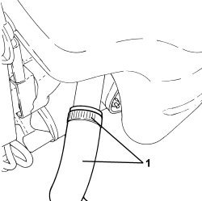
Applies to: engines: 1.4 8v; all production periods
1. Loosen the bands and disconnect the sleeve from the water pump rigid inlet pipe.
2. Undo the bolt (2a) and remove the water pump inlet pipe (2b).
- Remove the gasket.
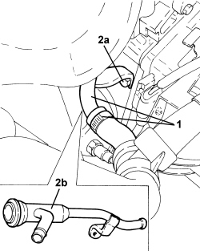
Applies to: engines: 1.4 8v; all production periods
Refitting
Removing- Place the water pump rigid inlet pipe, complete with gasket, in position and secure it using the bolt.
- Connect the sleeves to the water pump rigid inlet pipe.
Topics linked from this page (14)
- 0010T20 coolant change
- 0010T21 coolant check density and top up if necessary
- 1016A22 cam cover with fuel duct - r + r and replace gasket
- 1048A10 air cleaner filtering element - replace
- 1048A40 sleeve from air cleaner to flow meter - r + r
- 1072C44 exhaust manifold heat shield on bulkhead - r+r
- 1080C10 e.g.r. valve - r + r
- 1088D23 sleeve from thermostat to rigid pipe carrying fluid to pump - r r
- 5530B10 battery - r+r
- 5530B52 Battery DRIP TRAY/SUPPORT - R.R.
- 7055B54 under-engine guard - r r
- A001 BATTERY
- A010 ALTERNATOR
- A020 STARTER MOTOR